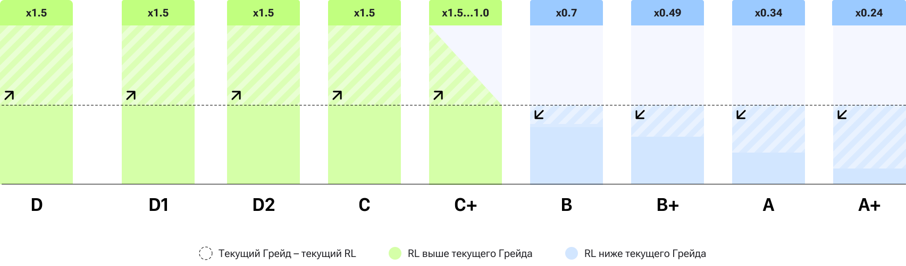

Правила платформы
Бегаешь — копишь XP. Обмениваешь XP — получаешь рубли.
Чем регулярнее и интенсивнее ты бегаешь, тем больше денег можно обменять в Клубах.
Как читать правила
Элементы платформы
- 1Тематическая социальная сеть и сервис с бесплатными инструментами для ведения беговой статистики, тренировочных планов и клубных сообществ.
- 2Игровой Грейдовый модуль (ИМ), основанный на личном и любительском прогрессе в беге с мотивационным финансовым подкреплением за счёт целевого благотворительного Эндаумент фонда (EF).
Игровой модуль (ИМ)
Общая концепция: за каждую тренировку Атлет получает баллы (Experience, XP), по мере набора которых поднимается по Грейдам от D до A+ и выше. В Матрице Грейдов заложено три типа:
Серый (D — D2)
Начинающие пользователи
Зелёный (C — B+)
Любители, работающие над результативностью
Синий (A — A+)
Продвинутые любители или профи с высокой результативностью
Для серых Грейдов условия доступа упрощены, делая их ознакомительными. Грейды зеленого типа и выше содержат оптимальный референс по результативности на оцениваемых дистанциях (5, 10, 21, 42 км), выраженный через таблицу Running Level (RL), составленной по аналогии c World Athletics Score Table. Если Атлет укладывается в референс или показывает результаты лучше, то далее за тренировки он получает повышенные XP, если нет, то начисление XP снижается.
Полученные XP монетизируются через обмен на деньги в Клубах. Такая возможность активируется следующими способами:
- На любом Грейде применить финансовый Инвайт, доступный для получения у другого Атлета с Грейдом С+ или выше, в Верифицированном Клубе или розыгрышах офиц. Telegram-канала.
- На Грейде D2 и выше, при подтверждении минимального RL=1, монетизация активируется автоматически.
Курс обмена XP на деньги зависит от Грейда: чем выше Грейд, тем более выгодный тариф в стандартной сетке. Курс определяет скорость выборки одобренного месячного лимита в Клубах. Необходимое количество XP для конкретного Грейда, курс обмена, RL и др. можно посмотреть в Матрице Грейдов.
Матрица Грейдов
Таблица 1 · Условия и пороги перехода по Грейдам (F → Next)
| Серый | Зелёный | Синий | |||||||||
|---|---|---|---|---|---|---|---|---|---|---|---|
| Грейды | F | D | D1 | D2 | C | C+ | B | B+ | A | A+ | Next |
| Условия перехода | |||||||||||
| Регистрация | + | + | + | + | + | + | + | + | + | + | + |
| Инфо профиля | — | + | + | + | + | + | + | + | + | + | + |
| Подписка в Telegram | — | — | — | + | + | + | + | + | + | + | + |
| Running Level | — | — | — | 0 | 1 — 9 | 10 — 23 | 24 — 38 | 39 — 52 | 53 — 63 | 64 — 75 | 76 — 118 |
| Experience, XP | — | 0 | 200 | 700 | 1 500 | 3 500 | 7 000 | 11 200 | 16 240 | 22 288 | 22 289 — ∞ |
| Монетизация, ₽ | — | 1 | 2 | 3 | 4 | 7 | 10 | 13 | 16 | 19 | 22 — ∞ |
| Доп. условия монетизации | |||||||||||
| Пульсовые данные | 20 мин | 20 мин | + | + | + | + | + | + | + | + | + |
| Верхние зоны (HPZ) | — | — | — | + | + | + | + | + | + | + | + |
| Беговые часы | — | — | — | + | + | + | + | + | + | + | + |
| Минимальный темп, мин/км | 10:00 | 10:00 | 8:00 | 8:00 | 8:00 | 8:00 | 8:00 | 8:00 | 8:00 | 8:00 | 8:00 |
| Дополнительные возможности | |||||||||||
| Создание Клуба | — | — | — | — | + | + | + | + | + | + | + |
| Роль Забота в Клубе | — | — | — | — | + | + | + | + | + | + | + |
| Финвайт | — | — | — | — | — | + | + | + | + | + | + |
Регистрация
Наличие действующего аккаунта на платформе Moneyrun.
Инфо Профиля
Заполненные обязательные поля в аккаунте Атлета: Имя, Пол, День рождения, Вес.
Подписка в Telegram
Активная подписка на официальный Telegram-канал Moneyrun, которая определяется ботом @Moneyrunbot. При отсутствии активной подписки на текущем Грейде новые тренировки не монетизируются.
Running Level
Верификация аккаунта в Moneyrun и наличие Забегов за последние 180 дней, на основании которых определяется RL из таблицы.
Experience, XP
Количество баллов XP, заработанных за активности на платформе Moneyrun.
Монетизация, ₽
Размер финансового вознаграждения за 1 XP в базовой тарифной сетке Клуба Moneyrun.
Пульсовые данные
Условие, где при наличии пульса рассчитывается XP за тренировку на основании eTRIMP, а при его отсутствии на «серых» Грейдах, подсчёт XP происходит по времени: длительность тренировки в минутах делится на 20.
Верхние зоны (HPZ)
High Perfomance Zones (Z3, Z4 и Z5) доступны для Грейда D2 и выше, при RL=1 наличии IQ >45% (значение может быть пересмотрено).
Беговые часы
Необходимость записи трека через устройство брендов Garmin, Coros, Polar, Suunto или Apple, которые передают больше достоверных данных через API, в отличие от записи с помощью смартфона.
Минимальный темп, мин/км
Предел среднего темпа тренировки, ниже которого активность не считается беговой и не монетизируется по правилам платформы.
Создание Клуба
Возможность создать собственный Клуб на платформе Moneyrun и претендовать на его Верификацию.
Роль Забота в Клубе
Возможность участвовать в развитии Верифицированного Клуба и состоять в закрытом сообществе MR Забота.
Финвайт
Специальный код (не более 3 штук на каждом следующем Грейде) для подключения монетизации в аккаунте другого Атлета.
ИМ. Experience (XP). Детализация
Обозначения
Размер начисляемого XP зависит преимущественно от следующих факторов:
Что влияет на XP
ИМ. XP. Пульсовые данные
Для корректного расчёта тренировочной нагрузки в личном профиле, в разделе Пульс, необходимо заполнить ЧССМ — максимальную частоту сердечных сокращений.
ИМ. XP. Тренировочная нагрузка
Тренировочная нагрузка показывает, насколько интенсивной была работа Атлета: учитывается не только длительность тренировки, но и время, проведённое в разных пульсовых зонах.
Коэффициенты стоимости пульсовых зон
| HR Zone | QTrimp/min | HR Zone | QTrimp/min |
|---|---|---|---|
| 100% | 5,45 | 74% | 1,06 |
| 97% | 4,49 | 71% | 0,90 |
| 94% | 3,82 | 69% | 0,77 |
| 92% | 3,26 | 66% | 0,65 |
| 89% | 2,77 | 64% | 0,56 |
| 87% | 2,36 | 61% | 0,47 |
| 84% | 2,01 | 59% | 0,40 |
| 82% | 1,71 | 56% | 0,34 |
| 79% | 1,46 | 54% | 0,29 |
| 77% | 1,24 | 51% | 0,25 |
ИМ. XP. Лимиты нагрузки
Чтобы за один тяжёлый день нельзя было «набегать» сколько угодно XP, нагрузка ограничивается: есть потолок на одну тренировку и на каждые 72 часа. Сверх лимита баллы не начисляются, но учитываются в накоплении.
После расчёта eTRIMP система применяет контрольные лимиты нагрузки. Они нужны, чтобы ограничивать чрезмерные значения и сохранять начисление XP в реалистичном диапазоне.
Если какой-либо лимит превышен, итоговое значение eTRIMP, доступное к конвертации в XP, вычисляется так:
min( iif( (360 − Ch72) < 40 ; 40 ; 360 − Ch72 ), ChT )
- Ch72 — сколько нагрузки уже накоплено за последние 72 часа;
360 − Ch72— это сколько ещё «помещается» в трёхсуточный лимит. - ChT — потолок одной тренировки (260 eTRIMP); итог не может его превысить.
- min(…) — берётся меньшее из двух значений, чтобы соблюсти оба лимита сразу.
- Минимум 40 eTRIMP — даже при почти исчерпанном лимите к конвертации в XP останется хотя бы 40 баллов.
При превышении лимитов по высоким пульсовым зонам берётся максимальное допустимое значение для этих зон, а оригинальное количество баллов всё равно попадает в Ch72.
ИМ. XP. Любительская результативность
Платформа сравнивает твой результат на дистанции с эталоном для текущего Грейда. Бежишь быстрее эталона — получаешь множитель RQ выше 1 и копишь XP быстрее; медленнее — множитель снижается. Результат нужно подтверждать забегами.
Таблица Running Level определяет соответствует ли Атлет по уровню результативности конкретному Грейду и напрямую влияет на начисления XP в каждой тренировке, что дает ускорение/замедление в переходах по Грейдам.
Определение RL-интервала для Грейдов
Для вычисления референсных значений результативности Грейдов, ежегодно используются протоколы мужского и женского забега Московского марафона на дистанции 10 км. Протокол ранжируется от большего к меньшему результату, принимается за 100% и делится на группы по убывающей экспоненте с коэффициентом 0,5. Выбирается время результата Ранга лежащего на границе групп.
Пример действующего распределения (мужской протокол):
| Грейд | Интервал | Ранг | Результат | RL |
|---|---|---|---|---|
| 100,00% | 10 740 | |||
| С | 50,00% | 5 370 | 53:02 | 01 — 09 |
| C+ | 25,00% | 2 684 | 46:21 | 10 — 23 |
| B | 12,50% | 1 341 | 41:53 | 24 — 38 |
| B+ | 6,25% | 670 | 38:38 | 39 — 52 |
| A | 3,13% | 335 | 36:12 | 53 — 63 |
| A+ | 1,56% | 167 | 34:27 | 64 — 75 |
| Next | <1,56% | <167 | <34:27 | 76 — ∞ |
Согласно полученным значениям определяется RL-интервал для Грейдов и экстраполируется на все целевые дистанции и пол. На основе таблицы RL определяем коэффициент RL (RQ), для расчета которого каждые 180 дней Атлету необходимо подтверждать результативность, сравнимую с его Грейдом, через привязанные протоколы Забегов на любой из целевых дистанций.
- Если результативность выше, чем референс текущего Грейда, то RQ = 1,5
- Если результативность соответствует референсу текущего Грейда, то RQ = от 1 до 1,5 пропорционально нахождению внутри RL-интервала
- Если результативность ниже референса текущего Грейда, тогда определяется какому Грейду она соответствует и вычисляется дельта между порядковыми номерами Грейдов, чтобы потом экспоненциально дисконтировать 1 с коэффициентом экспоненты 0,7 в степени дельты между Грейдами. RQ присваивается полученное значение (например, при разнице Грейдов в 1 ступень RQ = 0,7, при разнице в 2 ступени RQ = 0,49 и т.д.). После перехода на Грейд синего типа минимальный RQ = 1
- Если результативность не была показана за 180 дней (ни одного привязанного Забега с целевой дистанцией), тогда текущее значение RQ дисконтируется аналогично п.3, где степенью коэффициента экспоненты выступает количество 180 дневных интервалов с момента последнего протокола с привязанной тренировкой.

Рассмотрим на примерах:
Атлет Иван с текущим Грейдом C и результатом на 10 км = 36:00, что соответствует RL = 53 и “потенциальному” Грейду A – в этом случае он будет за каждую тренировку получать RQ = 1,5 (за тренировку с усилием на 10 XP он получит 15 XP)
Атлет Мария с текущим Грейдом B и результатом на 10 км = 58:00, что соответствует RL = 18 и “потенциальному” Грейду C+ – в этом случае она будет за каждую тренировку получать RQ = 0,7 (за тренировку с усилием на 10 XP она получит 7 XP).
Подтверждать свой RL необходимо минимум раз в 180 дней, чтобы не получить понижение RQ. Улучшить свой RL можно в любой момент, приняв участие в официальном Забеге, который размещается на платформе Moneyrun, а также привязать его к своей тренировке в приложении.
Таблица Running Level
| RL (M) | 5 км | 10 км | 21 км | 42 км | Грейд |
|---|---|---|---|---|---|
| 118 | 13:11 | 27:40 | 59:51 | 2:09:07 | Next |
| 117 | 13:14 | 27:48 | 1:00:10 | 2:09:28 | Next |
| 116 | 13:16 | 27:55 | 1:00:25 | 2:10:02 | Next |
| 115 | 13:19 | 28:01 | 1:00:40 | 2:10:35 | Next |
| 114 | 13:22 | 28:07 | 1:00:55 | 2:11:08 | Next |
| 113 | 13:25 | 28:14 | 1:01:10 | 2:11:42 | Next |
| 112 | 13:28 | 28:21 | 1:01:25 | 2:12:15 | Next |
| 111 | 13:31 | 28:28 | 1:01:40 | 2:12:49 | Next |
| 110 | 13:34 | 28:34 | 1:01:56 | 2:13:23 | Next |
| 109 | 13:36 | 28:41 | 1:02:11 | 2:13:58 | Next |
| 108 | 13:39 | 28:47 | 1:02:27 | 2:14:32 | Next |
| 107 | 13:42 | 28:54 | 1:02:42 | 2:15:06 | Next |
| 106 | 13:45 | 29:01 | 1:02:58 | 2:15:41 | Next |
| 105 | 13:48 | 29:08 | 1:03:14 | 2:16:16 | Next |
| 104 | 13:51 | 29:15 | 1:03:30 | 2:16:51 | Next |
| 103 | 13:54 | 29:21 | 1:03:46 | 2:17:26 | Next |
| 102 | 13:57 | 29:28 | 1:04:02 | 2:18:01 | Next |
| 101 | 14:00 | 29:35 | 1:04:18 | 2:18:37 | Next |
| 100 | 14:03 | 29:42 | 1:04:34 | 2:19:13 | Next |
| 99 | 14:06 | 29:49 | 1:04:50 | 2:19:49 | Next |
| 98 | 14:09 | 29:56 | 1:05:06 | 2:20:25 | Next |
| 97 | 14:12 | 30:03 | 1:05:23 | 2:21:01 | Next |
| 96 | 14:15 | 30:10 | 1:05:39 | 2:21:37 | Next |
| 95 | 14:18 | 30:18 | 1:05:56 | 2:22:14 | Next |
| 94 | 14:21 | 30:24 | 1:06:12 | 2:22:51 | Next |
| 93 | 14:24 | 30:32 | 1:06:29 | 2:23:28 | Next |
| 92 | 14:27 | 30:39 | 1:06:46 | 2:24:05 | Next |
| 91 | 14:31 | 30:47 | 1:07:03 | 2:24:43 | Next |
| 90 | 14:34 | 30:54 | 1:07:20 | 2:25:20 | Next |
| 89 | 14:37 | 31:01 | 1:07:37 | 2:25:58 | Next |
| 88 | 14:40 | 31:08 | 1:07:54 | 2:26:37 | Next |
| 87 | 14:43 | 31:16 | 1:08:11 | 2:27:15 | Next |
| 86 | 14:47 | 31:23 | 1:08:29 | 2:27:53 | Next |
| 85 | 14:50 | 31:31 | 1:08:46 | 2:28:32 | Next |
| 84 | 14:53 | 31:39 | 1:09:04 | 2:29:11 | Next |
| 83 | 14:57 | 31:47 | 1:09:21 | 2:29:51 | Next |
| 82 | 15:01 | 31:54 | 1:09:39 | 2:30:30 | Next |
| 81 | 15:03 | 32:01 | 1:09:57 | 2:31:10 | Next |
| 80 | 15:06 | 32:09 | 1:10:15 | 2:31:50 | Next |
| 79 | 15:09 | 32:17 | 1:10:33 | 2:32:30 | Next |
| 78 | 15:13 | 32:25 | 1:10:51 | 2:33:11 | Next |
| 77 | 15:16 | 32:33 | 1:11:10 | 2:33:52 | Next |
| 76 | 15:20 | 32:41 | 1:11:28 | 2:34:33 | Next |
| 75 | 15:24 | 32:49 | 1:11:47 | 2:35:14 | A+ |
| 74 | 15:27 | 32:57 | 1:12:05 | 2:35:56 | A+ |
| 73 | 15:30 | 33:06 | 1:12:24 | 2:36:38 | A+ |
| 72 | 15:34 | 33:14 | 1:12:43 | 2:37:20 | A+ |
| 71 | 15:38 | 33:22 | 1:13:02 | 2:38:03 | A+ |
| 70 | 15:41 | 33:30 | 1:13:21 | 2:38:46 | A+ |
| 69 | 15:45 | 33:39 | 1:13:41 | 2:39:29 | A+ |
| 68 | 15:49 | 33:47 | 1:14:00 | 2:40:13 | A+ |
| 67 | 15:52 | 33:56 | 1:14:20 | 2:40:57 | A+ |
| 66 | 15:56 | 34:04 | 1:14:40 | 2:41:41 | A+ |
| 65 | 16:00 | 34:13 | 1:15:00 | 2:42:26 | A+ |
| 64 | 16:03 | 34:22 | 1:15:20 | 2:43:11 | A+ |
| 63 | 16:07 | 34:31 | 1:15:40 | 2:43:56 | A |
| 62 | 16:11 | 34:40 | 1:16:00 | 2:44:42 | A |
| 61 | 16:15 | 34:48 | 1:16:21 | 2:45:28 | A |
| 60 | 16:19 | 34:58 | 1:16:42 | 2:46:14 | A |
| 59 | 16:23 | 35:07 | 1:17:02 | 2:47:01 | A |
| 58 | 16:27 | 35:16 | 1:17:23 | 2:47:49 | A |
| 57 | 16:31 | 35:25 | 1:17:45 | 2:48:36 | A |
| 56 | 16:35 | 35:34 | 1:18:06 | 2:49:25 | A |
| 55 | 16:39 | 35:44 | 1:18:28 | 2:50:13 | A |
| 54 | 16:43 | 35:53 | 1:18:50 | 2:51:02 | A |
| 53 | 16:47 | 36:03 | 1:19:12 | 2:51:52 | A |
| 52 | 16:51 | 36:13 | 1:19:34 | 2:52:42 | B+ |
| 51 | 16:56 | 36:22 | 1:19:56 | 2:53:33 | B+ |
| 50 | 17:00 | 36:32 | 1:20:19 | 2:54:24 | B+ |
| 49 | 17:04 | 36:42 | 1:20:42 | 2:55:16 | B+ |
| 48 | 17:08 | 36:53 | 1:21:05 | 2:56:08 | B+ |
| 47 | 17:13 | 37:03 | 1:21:28 | 2:57:01 | B+ |
| 46 | 17:17 | 37:13 | 1:21:52 | 2:57:54 | B+ |
| 45 | 17:22 | 37:24 | 1:22:16 | 2:58:48 | B+ |
| 44 | 17:26 | 37:34 | 1:22:40 | 2:59:43 | B+ |
| 43 | 17:31 | 37:45 | 1:23:04 | 3:00:39 | B+ |
| 42 | 17:35 | 37:56 | 1:23:29 | 3:01:35 | B+ |
| 41 | 17:40 | 38:07 | 1:23:54 | 3:02:31 | B+ |
| 40 | 17:45 | 38:18 | 1:24:19 | 3:03:29 | B+ |
| 39 | 17:50 | 38:29 | 1:24:44 | 3:04:27 | B+ |
| 38 | 17:55 | 38:41 | 1:25:10 | 3:05:27 | B |
| 37 | 18:00 | 38:52 | 1:25:36 | 3:06:27 | B |
| 36 | 18:05 | 39:04 | 1:26:03 | 3:07:28 | B |
| 35 | 18:10 | 39:16 | 1:26:30 | 3:08:29 | B |
| 34 | 18:15 | 39:27 | 1:26:57 | 3:09:32 | B |
| 33 | 18:20 | 39:39 | 1:27:25 | 3:10:36 | B |
| 32 | 18:25 | 39:53 | 1:27:53 | 3:11:41 | B |
| 31 | 18:31 | 40:06 | 1:28:21 | 3:12:47 | B |
| 30 | 18:37 | 40:19 | 1:28:50 | 3:13:54 | B |
| 29 | 18:42 | 40:32 | 1:29:20 | 3:15:03 | B |
| 28 | 18:48 | 40:45 | 1:29:50 | 3:16:13 | B |
| 27 | 18:54 | 40:59 | 1:30:20 | 3:17:24 | B |
| 26 | 19:00 | 41:13 | 1:30:51 | 3:18:37 | B |
| 25 | 19:06 | 41:27 | 1:31:23 | 3:19:51 | B |
| 24 | 19:12 | 41:42 | 1:31:55 | 3:21:07 | B |
| 23 | 19:18 | 41:56 | 1:32:28 | 3:22:25 | C+ |
| 22 | 19:25 | 42:12 | 1:33:01 | 3:23:45 | C+ |
| 21 | 19:31 | 42:27 | 1:33:35 | 3:25:07 | C+ |
| 20 | 19:38 | 42:43 | 1:34:10 | 3:26:31 | C+ |
| 19 | 19:45 | 43:00 | 1:34:46 | 3:27:58 | C+ |
| 18 | 19:52 | 43:17 | 1:35:23 | 3:29:28 | C+ |
| 17 | 20:00 | 43:34 | 1:36:01 | 3:31:00 | C+ |
| 16 | 20:07 | 43:53 | 1:36:40 | 3:32:36 | C+ |
| 15 | 20:15 | 44:11 | 1:37:20 | 3:34:16 | C+ |
| 14 | 20:23 | 44:31 | 1:38:01 | 3:36:00 | C+ |
| 13 | 20:32 | 44:51 | 1:38:44 | 3:37:49 | C+ |
| 12 | 20:41 | 45:13 | 1:39:28 | 3:39:43 | C+ |
| 11 | 20:50 | 45:35 | 1:40:14 | 3:41:44 | C+ |
| 10 | 21:00 | 45:59 | 1:41:02 | 3:43:53 | C+ |
| 9 | 21:10 | 46:24 | 1:41:52 | 3:46:12 | C |
| 8 | 21:21 | 46:51 | 1:42:45 | 3:48:42 | C |
| 7 | 21:33 | 47:21 | 1:43:40 | 3:51:29 | C |
| 6 | 21:45 | 47:53 | 1:44:40 | 3:54:38 | C |
| 5 | 22:00 | 48:30 | 1:45:44 | 3:58:22 | C |
| 4 | 22:16 | 49:14 | 1:46:53 | 4:03:14 | C |
| 3 | 22:35 | 50:11 | 1:48:10 | 4:08:33 | C |
| 2 | 23:00 | 51:26 | 1:49:37 | 4:13:49 | C |
| 1 | 23:30 | 53:00 | 1:51:00 | 4:30:00 | C |
| 0 | Наличие верификации и любого забега за 180 дней | D2 | |||
| RL (Ж) | 5 км | 10 км | 21 км | 42 км | Грейд |
|---|---|---|---|---|---|
| 118 | 15:10 | 31:22 | 1:08:07 | 2:28:40 | Next |
| 117 | 15:12 | 31:36 | 1:08:33 | 2:29:45 | Next |
| 116 | 15:17 | 31:48 | 1:09:02 | 2:30:49 | Next |
| 115 | 15:23 | 31:59 | 1:09:31 | 2:31:54 | Next |
| 114 | 15:28 | 32:10 | 1:10:00 | 2:32:59 | Next |
| 113 | 15:33 | 32:22 | 1:10:29 | 2:34:04 | Next |
| 112 | 15:38 | 32:33 | 1:10:59 | 2:35:10 | Next |
| 111 | 15:44 | 32:45 | 1:11:28 | 2:36:16 | Next |
| 110 | 15:49 | 32:56 | 1:11:58 | 2:37:22 | Next |
| 109 | 15:55 | 33:08 | 1:12:28 | 2:38:29 | Next |
| 108 | 16:00 | 33:19 | 1:12:57 | 2:39:36 | Next |
| 107 | 16:05 | 33:31 | 1:13:28 | 2:40:43 | Next |
| 106 | 16:11 | 33:43 | 1:13:58 | 2:41:51 | Next |
| 105 | 16:16 | 33:55 | 1:14:28 | 2:42:59 | Next |
| 104 | 16:22 | 34:07 | 1:14:59 | 2:44:07 | Next |
| 103 | 16:27 | 34:19 | 1:15:29 | 2:45:16 | Next |
| 102 | 16:33 | 34:31 | 1:16:00 | 2:46:24 | Next |
| 101 | 16:39 | 34:43 | 1:16:31 | 2:47:34 | Next |
| 100 | 16:44 | 34:55 | 1:17:02 | 2:48:43 | Next |
| 99 | 16:50 | 35:07 | 1:17:33 | 2:49:54 | Next |
| 98 | 16:56 | 35:19 | 1:18:05 | 2:51:04 | Next |
| 97 | 17:01 | 35:31 | 1:18:36 | 2:52:15 | Next |
| 96 | 17:07 | 35:44 | 1:19:08 | 2:53:26 | Next |
| 95 | 17:13 | 35:56 | 1:19:40 | 2:54:38 | Next |
| 94 | 17:19 | 36:09 | 1:20:12 | 2:55:50 | Next |
| 93 | 17:25 | 36:21 | 1:20:44 | 2:57:02 | Next |
| 92 | 17:30 | 36:34 | 1:21:17 | 2:58:15 | Next |
| 91 | 17:36 | 36:47 | 1:21:49 | 2:59:28 | Next |
| 90 | 17:42 | 36:59 | 1:22:22 | 3:00:42 | Next |
| 89 | 17:48 | 37:12 | 1:22:55 | 3:01:56 | Next |
| 88 | 17:54 | 37:25 | 1:23:28 | 3:03:10 | Next |
| 87 | 18:00 | 37:38 | 1:24:02 | 3:04:25 | Next |
| 86 | 18:06 | 37:51 | 1:24:35 | 3:05:41 | Next |
| 85 | 18:12 | 38:04 | 1:25:09 | 3:06:57 | Next |
| 84 | 18:19 | 38:18 | 1:25:43 | 3:08:13 | Next |
| 83 | 18:25 | 38:31 | 1:26:17 | 3:09:30 | Next |
| 82 | 18:31 | 38:44 | 1:26:52 | 3:10:47 | Next |
| 81 | 18:37 | 38:58 | 1:27:26 | 3:12:05 | Next |
| 80 | 18:44 | 39:11 | 1:28:01 | 3:13:23 | Next |
| 79 | 18:50 | 39:25 | 1:28:36 | 3:14:42 | Next |
| 78 | 18:56 | 39:39 | 1:29:11 | 3:16:02 | Next |
| 77 | 19:03 | 39:53 | 1:29:47 | 3:17:22 | Next |
| 76 | 19:09 | 40:06 | 1:30:23 | 3:18:42 | Next |
| 75 | 19:16 | 40:20 | 1:30:58 | 3:20:03 | A+ |
| 74 | 19:22 | 40:35 | 1:31:35 | 3:21:25 | A+ |
| 73 | 19:29 | 40:49 | 1:32:11 | 3:22:47 | A+ |
| 72 | 19:36 | 41:03 | 1:32:48 | 3:24:10 | A+ |
| 71 | 19:42 | 41:17 | 1:33:25 | 3:25:34 | A+ |
| 70 | 19:49 | 41:32 | 1:34:02 | 3:26:58 | A+ |
| 69 | 19:56 | 41:47 | 1:34:39 | 3:28:23 | A+ |
| 68 | 20:03 | 42:01 | 1:35:17 | 3:29:48 | A+ |
| 67 | 20:10 | 42:16 | 1:35:55 | 3:31:14 | A+ |
| 66 | 20:17 | 42:31 | 1:36:34 | 3:32:41 | A+ |
| 65 | 20:24 | 42:46 | 1:37:12 | 3:34:09 | A+ |
| 64 | 20:31 | 43:01 | 1:37:51 | 3:35:37 | A+ |
| 63 | 20:38 | 43:16 | 1:38:30 | 3:37:06 | A |
| 62 | 20:45 | 43:32 | 1:39:10 | 3:38:36 | A |
| 61 | 20:53 | 43:47 | 1:39:50 | 3:40:07 | A |
| 60 | 21:00 | 44:03 | 1:40:30 | 3:41:38 | A |
| 59 | 21:07 | 44:19 | 1:41:11 | 3:43:10 | A |
| 58 | 21:15 | 44:35 | 1:41:52 | 3:44:43 | A |
| 57 | 21:22 | 44:51 | 1:42:33 | 3:46:17 | A |
| 56 | 21:30 | 45:07 | 1:43:15 | 3:47:52 | A |
| 55 | 21:38 | 45:23 | 1:43:57 | 3:49:28 | A |
| 54 | 21:45 | 45:40 | 1:44:39 | 3:51:05 | A |
| 53 | 21:53 | 45:57 | 1:45:22 | 3:52:43 | A |
| 52 | 22:01 | 46:14 | 1:46:05 | 3:54:21 | B+ |
| 51 | 22:09 | 46:31 | 1:46:49 | 3:56:01 | B+ |
| 50 | 22:17 | 46:48 | 1:47:33 | 3:57:42 | B+ |
| 49 | 22:25 | 47:05 | 1:48:18 | 3:59:24 | B+ |
| 48 | 22:33 | 47:23 | 1:49:03 | 4:01:08 | B+ |
| 47 | 22:42 | 47:40 | 1:49:48 | 4:02:52 | B+ |
| 46 | 22:50 | 47:58 | 1:50:34 | 4:04:38 | B+ |
| 45 | 22:59 | 48:16 | 1:51:21 | 4:06:25 | B+ |
| 44 | 23:07 | 48:35 | 1:52:08 | 4:08:13 | B+ |
| 43 | 23:16 | 48:53 | 1:52:55 | 4:10:03 | B+ |
| 42 | 23:25 | 49:12 | 1:53:43 | 4:11:54 | B+ |
| 41 | 23:34 | 49:31 | 1:54:32 | 4:13:47 | B+ |
| 40 | 23:43 | 49:50 | 1:55:22 | 4:15:41 | B+ |
| 39 | 23:52 | 50:10 | 1:56:12 | 4:17:37 | B+ |
| 38 | 24:01 | 50:29 | 1:57:02 | 4:19:35 | B |
| 37 | 24:11 | 50:49 | 1:57:54 | 4:21:34 | B |
| 36 | 24:20 | 51:10 | 1:58:46 | 4:23:36 | B |
| 35 | 24:30 | 51:30 | 1:59:39 | 4:25:39 | B |
| 34 | 24:40 | 51:51 | 2:00:32 | 4:27:44 | B |
| 33 | 24:50 | 52:12 | 2:01:27 | 4:29:52 | B |
| 32 | 25:00 | 52:34 | 2:02:22 | 4:32:02 | B |
| 31 | 25:11 | 52:56 | 2:03:18 | 4:34:14 | B |
| 30 | 25:21 | 53:18 | 2:04:15 | 4:36:29 | B |
| 29 | 25:32 | 53:41 | 2:05:13 | 4:38:47 | B |
| 28 | 25:43 | 54:04 | 2:06:13 | 4:41:07 | B |
| 27 | 25:54 | 54:27 | 2:07:13 | 4:43:31 | B |
| 26 | 26:06 | 54:51 | 2:08:14 | 4:45:58 | B |
| 25 | 26:18 | 55:15 | 2:09:17 | 4:48:28 | B |
| 24 | 26:30 | 55:40 | 2:10:21 | 4:51:02 | B |
| 23 | 26:42 | 56:06 | 2:11:26 | 4:53:41 | C+ |
| 22 | 26:55 | 56:32 | 2:12:33 | 4:56:23 | C+ |
| 21 | 27:08 | 56:59 | 2:13:42 | 4:59:11 | C+ |
| 20 | 27:21 | 57:26 | 2:14:52 | 5:02:04 | C+ |
| 19 | 27:35 | 57:54 | 2:16:04 | 5:05:03 | C+ |
| 18 | 27:49 | 58:23 | 2:17:18 | 5:08:08 | C+ |
| 17 | 28:03 | 58:53 | 2:18:35 | 5:11:21 | C+ |
| 16 | 28:18 | 59:23 | 2:19:54 | 5:14:42 | C+ |
| 15 | 28:34 | 59:23 | 2:21:15 | 5:18:12 | C+ |
| 14 | 28:51 | 59:55 | 2:22:40 | 5:21:53 | C+ |
| 13 | 29:08 | 1:00:28 | 2:24:08 | 5:25:47 | C+ |
| 12 | 29:26 | 1:01:02 | 2:25:39 | 5:29:56 | C+ |
| 11 | 29:45 | 1:02:15 | 2:27:15 | 5:34:23 | C+ |
| 10 | 30:05 | 1:02:54 | 2:28:56 | 5:39:14 | C+ |
| 9 | 30:27 | 1:03:36 | 2:30:42 | 5:44:35 | C |
| 8 | 30:51 | 1:04:20 | 2:32:35 | 5:50:40 | C |
| 7 | 31:17 | 1:05:07 | 2:34:37 | 5:57:53 | C |
| 6 | 31:47 | 1:05:59 | 2:36:50 | 6:06:17 | C |
| 5 | 32:22 | 1:06:56 | 2:39:16 | 6:15:50 | C |
| 4 | 33:08 | 1:08:01 | 2:42:03 | 6:25:12 | C |
| 3 | 33:49 | 1:09:18 | 2:45:20 | 6:32:36 | C |
| 2 | 34:00 | 1:10:58 | 2:49:37 | 6:45:14 | C |
| 1 | 35:00 | 1:12:30 | 2:55:00 | 7:00:00 | C |
| 0 | Наличие верификации и любого забега за 180 дней | D2 | |||
ИМ. XP. Начисление
Накопленная нагрузка превращается в XP: время в каждой пульсовой зоне делится на «вес» зоны (чем выше зона — тем больше XP), а затем результат корректируется множителями RQ (результативность) и IQ (качество нагрузки).
Финальные значения eTRIMP конвертируются в XP по пульсовым зонам: нагрузка делится на установленный для зоны делитель, а затем корректируется коэффициентами RQ и IQ.
Делители по пульсовым зонам
| Пульс. зона | % от ЧССМ | Делитель | Лимит (eTRIMP) |
|---|---|---|---|
| Z5 | 95 — 100% | 3 | 100 |
| Z4 | 90 — 95% | 4,5 | 150 |
| Z3 | 80 — 90% | 10 | — |
| Z2 | 65 — 80% | 17 | — |
| Z1 | 0 — 65% | 20 | — |
Полученное значение XP умножается на текущий RQ, а затем на IQ (Intensive Quotient). IQ измеряется в процентах: 100% означает полное соответствие нагрузки ожиданиям платформы. Если значение ниже 45% (порог может быть пересмотрен), HPZ отключается на 30 дней до появления новых валидных данных, а для расчёта XP используется делитель зоны Z2 — 17.
ИМ. XP. Дополнительные условия
Для начисления XP действуют условия, которые зависят от конкретного Грейда и отражены визуально в Матрице Грейдов.
Условия начисления XP
Тренировки, которые не подходят под условия 2-го элемента платформы Moneyrun, не участвуют в начислении XP, но остаются доступными для личной статистики профиля в рамках 1-го элемента платформы.
Переходы и возможности
Финансирование
Основу ежемесячного бюджета на распределение Атлетам составляют проценты, получаемые за размещение Эндаумент Фонда Маниран (EF Moneyrun). Эндаумент фонд формируется за счет переводов Атлетов на платформе и добровольных взносов инвесторов, разделяющих концепцию платформы.
Полученные проценты ежемесячно распределяются между клубом Moneyrun и Верифицированными Клубами на платформе. В зависимости от размера EF определяется месячный лимит обмена в клубе Moneyrun, а курс Грейда определяет скорость выборки денег из Клуба в рамках ежемесячного лимита.
Верифицированные Клубы определяют лимит и алгоритм монетизации самостоятельно, но в соответствии c философией платформы.
Философия
EF Moneyrun — это капитал, безвозмездно переданный меценатами и инвесторами для сервиса Moneyrun и размещаемый на финансовой площадке для получения ежемесячного процентного дохода, который направляется на финансирование Атлетов.
На текущей стадии разработки основной идеей является развитие бега на результат, а все алгоритмы настроены на оценку показателей тренировок с точки зрения подготовки к классическим шоссейным дистанциям.
Тренировки с низким темпом или показателями ультрабега могут не пройти проверку Совета экспертов и не получить монетизацию как не входящие в сферу интересов EF Moneyrun. Это не говорит о негативном отношении к другим видам спорта — сервис уважает и ценит старания Атлетов, но готов монетизировать только тренировки, учитывающие специфику подготовки к бегу на результат, в рамках текущей концепции.
Размещение тренировок из небеговых дисциплин (велосипед, роликовые коньки, лыжи и др.) не приветствуется: Атлету выносится предупреждение. При повторении ситуации сервис будет вынужден заблокировать аккаунт.
Все процессы выстроены максимально экономично, с опорой на труд волонтёров, меценатов и энтузиастов бега. Moneyrun — это некоммерческая организация (выплаты носят характер благотворительных поощрений) и не преследует цели заработка: платформа готова финансово поощрять Атлетов, нацеленных на результативность.